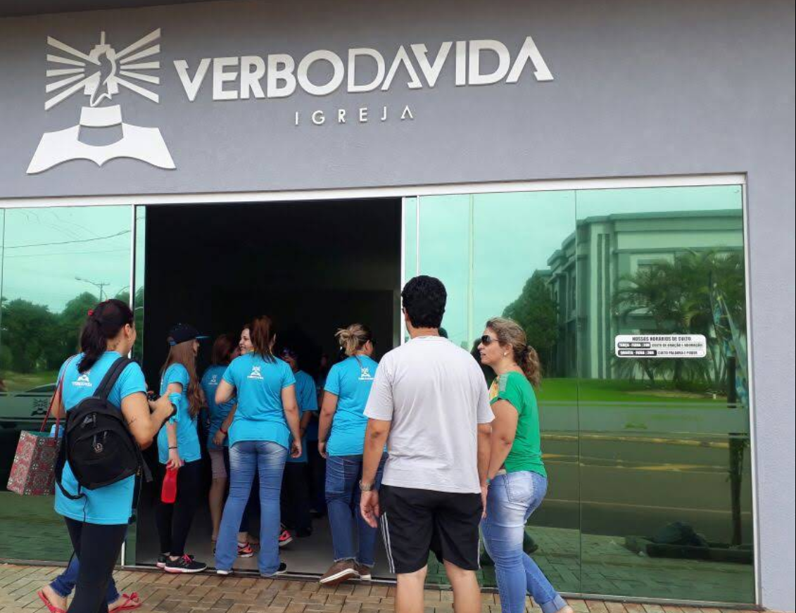
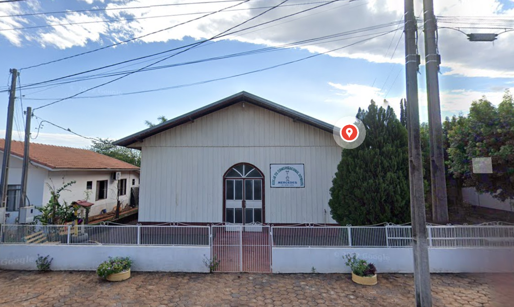

⛪ Igrejas e Espaços Comunitários

Paróquia Nossa Senhora Aparecida
Igreja católica central, com forte presença na comunidade.
📍 Ver no mapa

Igreja Evangélica Verbo da Vida
Ativa na cidade, promovendo eventos e atividades comunitárias.
📍 Ver no mapa
IECLB – Paróquia de Mercedes
Igreja Evangélica de Confissão Luterana, com envolvimento em ações sociais.
📍 Ver no mapa

Igreja Evangélica Congregacional do Brasil (IECB)
Localizada na Rua João Pessoa, atuante na comunidade local.
📍 Ver no mapa